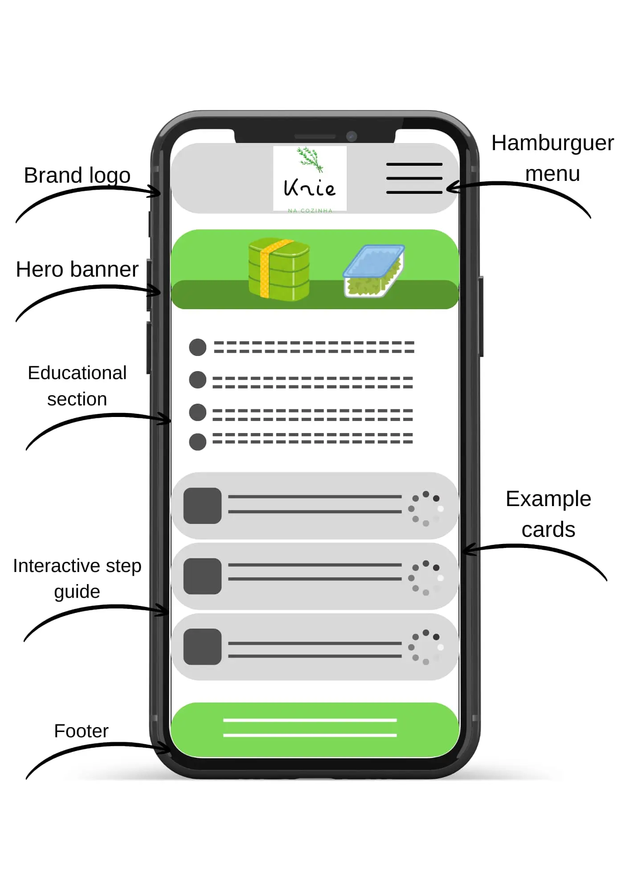
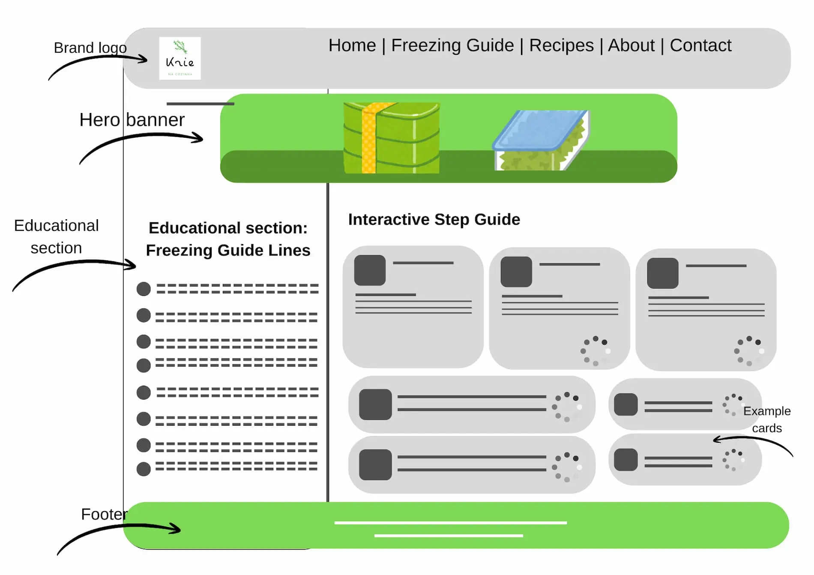

Site and Domain
Krie na Cozinha
Planned Domain: krienacozinha.kyte.site
Reason for choosing this name: "Krie na Cozinha" uses a clever wordplay combining my last name (Krieger) with the Portuguese word "Cria" (to create/creativity). It establishes a highly personal brand identifier that connects directly to culinary production, meal preparation, and kitchen organization.
Site Purpose
The purpose of Krie na Cozinha is to provide an interactive, structured system for individuals looking to master weekly meal prep and organized freezer meal production. The platform delivers step-by-step guides on batch cooking and safe preservation, a dynamic database of freezer-friendly recipes, and a fully functional planning tool where users can build, calculate, and persist their customized weekly meal schedules.
Target Audience Scenarios
- Scenario 1: "I have a very busy routine during the week and want to start freezing my meals to save time, but I am afraid of food losing its quality or spoiling. Where can I find clear parameters on containers, safe freezing methods, and reheating instructions?"
- Scenario 2: "I need to plan my dinners for the upcoming week using specific food groups. Can I easily look through a recipe list, filter them by category, and select them to assemble a visual weekly planner that stays saved on my browser?"
Color Scheme
The visual identity is drawn directly from the corporate logo, highlighting freshness, culinary balance, and layout cleanliness:
- Primary Color (#2e7d32): A vibrant Herb Green matching the logo's central graphic leaf. Used for main headers, active page navigation, and primary category tags to evoke health and natural ingredients.
- Secondary Color (#e65100): A warm Terracotta Orange used for call-to-action buttons, user event highlights, and dynamic alerts to stimulate appetite and create a professional contrast.
- Background Color (#fafafa): An Off-White baseline used for the document bodies to provide high contrast, structural clarity, and an organized, modern aesthetic.
Typography
- Font Family:
'Segoe UI', Tahoma, Geneva, Verdana, sans-serif - Application Strategy: This modern, universally supported sans-serif typeface ensures excellent readability across diverse device screen sizes. Bold weights will be applied to section headings to establish visual hierarchy, while clean regular body styling (line-height: 1.6) will handle recipes and data tables to maintain strict mobile accessibility standards.
Wireframes
Layout blueprint for the application's central views:
Mobile View Layout

Desktop View Layout
